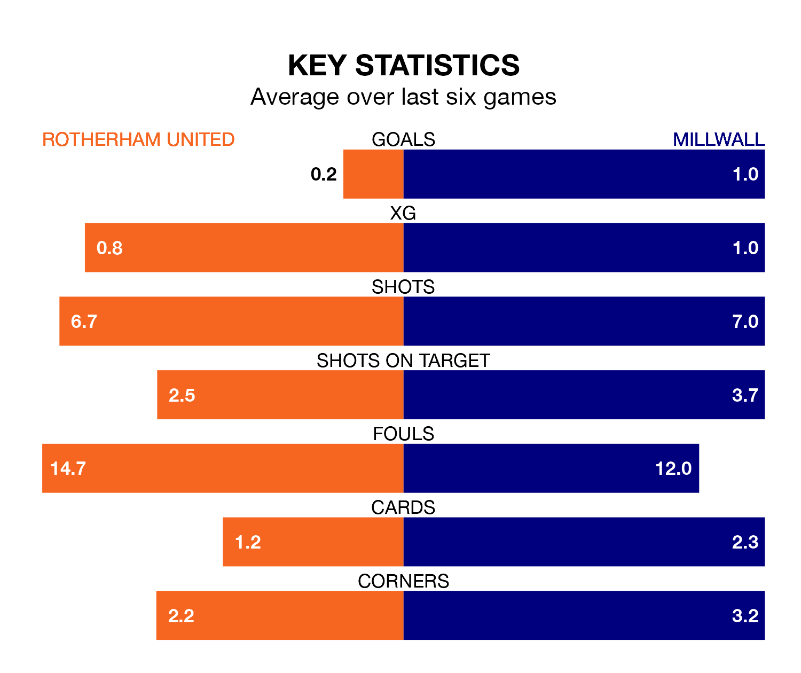

Millwall are strong favourites to take all three points despite Rotherham United's home advantage in Monday's match at the AESSEAL New York Stadium.
*Betting Company* are offering odds of 1.83 on Millwall sealing the win, with the visitors sitting 16th in EFL Championship table.
Rotherham, who are 24th in the league and 24 points behind the Lions, are priced at 4 to win. A draw is set at 3.4.
Rotherham are in terrible form in EFL Championship, with no wins and a draw from their last six games.
With three wins and two draws over that period, Millwall's form is much better – they have taken 11 points from 18, compared to United's one.
In the last 10 years, Rotherham and Millwall have played each other on nine occasions. Rotherham won three of them, Millwall four, and they drew twice.
On average, the Millers scored 0.6 goals and the Lions 1.1 in those matches.
Their last meeting was on September 20, when Millwall won 3-0 at home.
With 30 goals in 39 games so far this season, the Millers are the league's lowest scorers with 0.8 goals per game. And they are conceding more than average, letting in 80 goals at a rate of 2.1 per game.
The Lions are also below average scorers, with 0.9 goals per game, compared to a league average of 1.4. They have conceded 1.3 goals per game.
Rotherham's last match was on Friday, a 3-0 loss against Preston North End.
Millwall drew 1-1 with West Bromwich Albion last time out, also on Friday, with Duncan Watmore on the scoresheet.
Monday's match will be refereed by Alex Chilowicz, who is taking charge of his first EFL Championship game this season.
He is yet to oversee a match featuring either Rotherham or Millwall this season.
Updated: 10:31 (UTC), 31/03/24